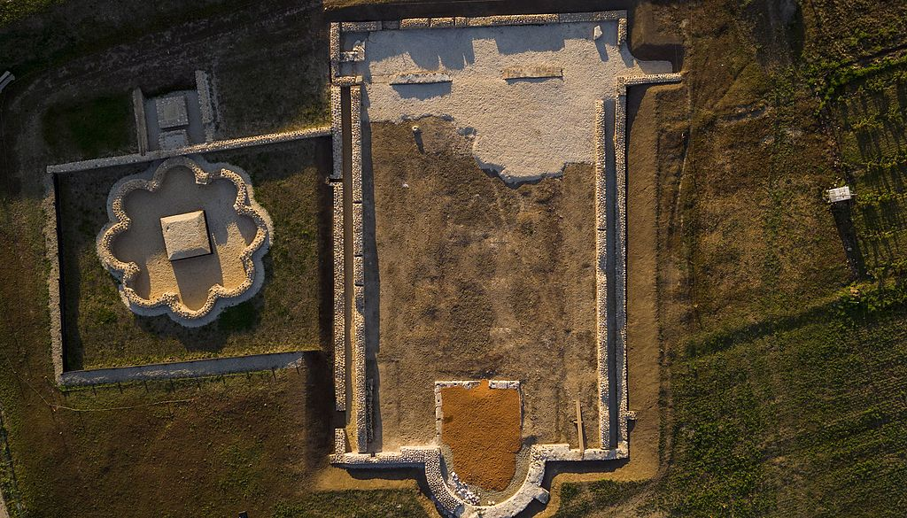
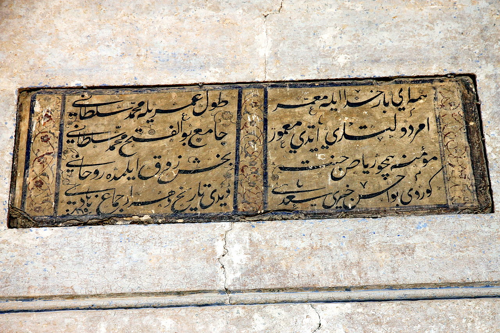
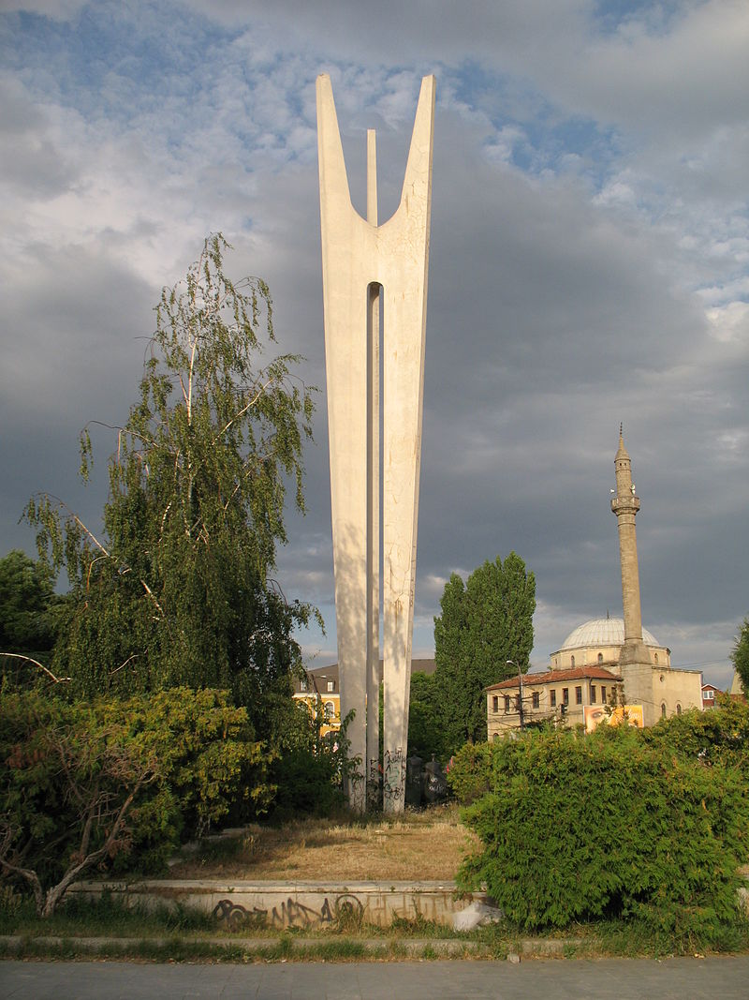
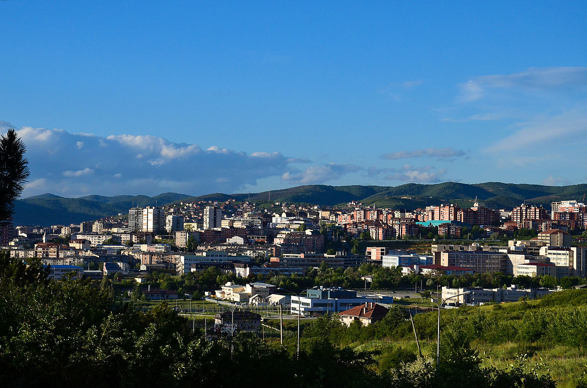
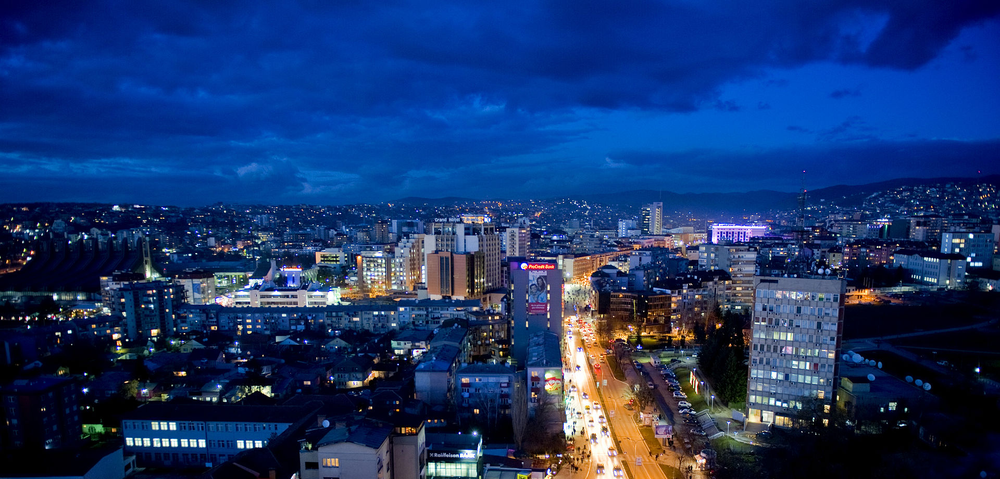
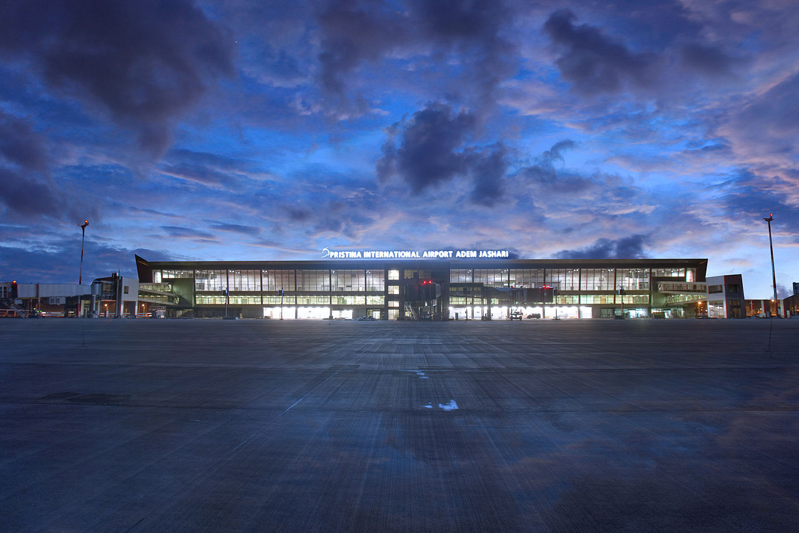
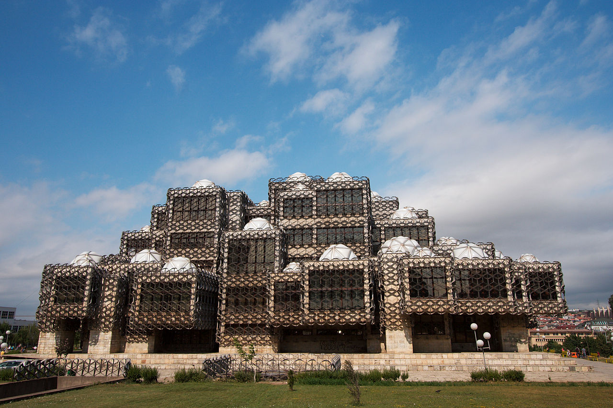
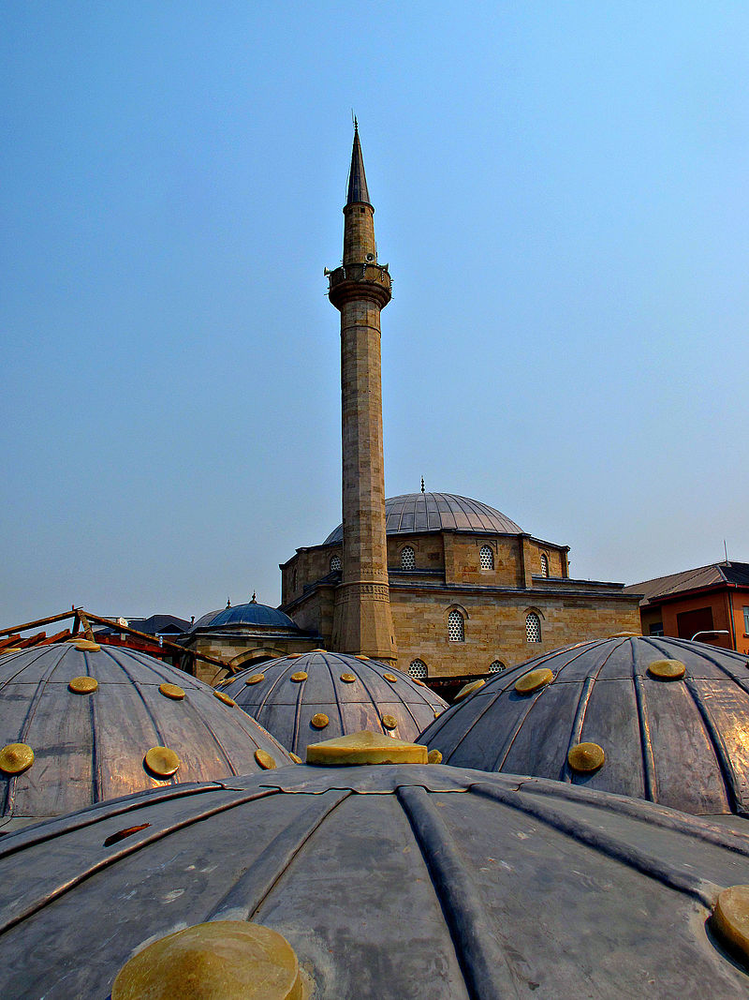
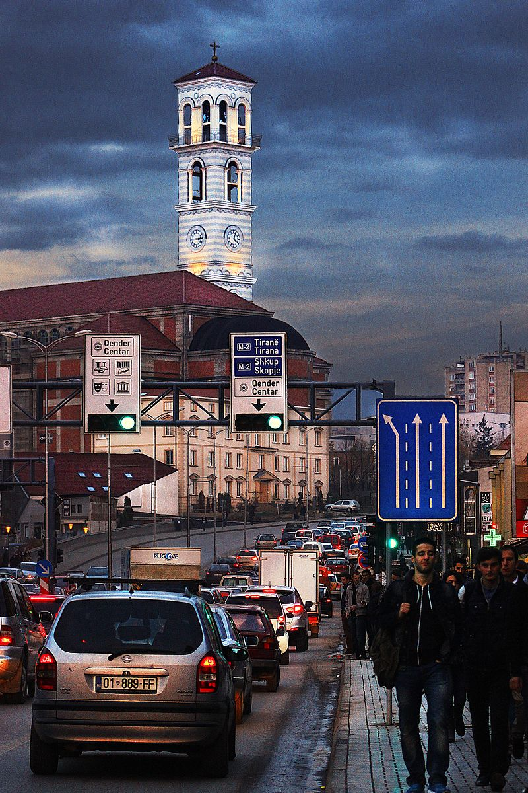
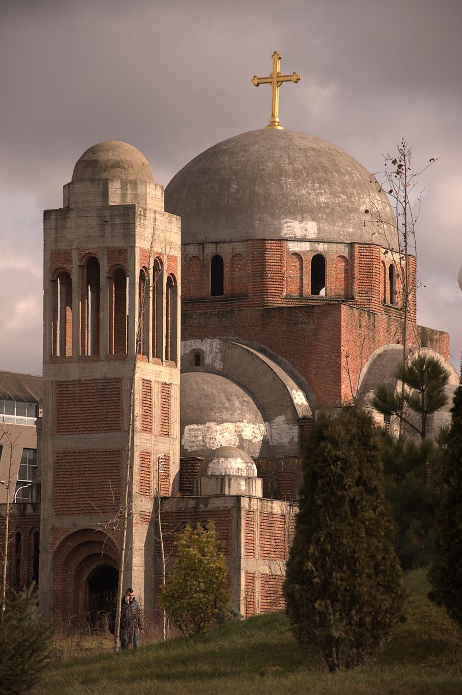

Pristina is the capital of Kosovo and seat of the eponymous municipality and district. It is the second-largest Albanian-inhabited city in Europe, after Tirana. During the Paleolithic Age, what is now the area of Pristina was involved by the Vinča culture. In classical times it was home to several Illyrian peoples and Romans. King Bardyllis brought various tribes together in the area of Pristina in the 4th century BC, establishing the Dardanian Kingdom. The heritage of the classical era is still evident in the city, represented by ancient city of Ulpiana, which was considered one of the most important Roman cities in the Balkan Peninsula. Between the 5th and the 9th century the area was part of the Byzantine Empire. In the middle of the 9th century it was ceded to the First Bulgarian Empire. In the early 11th century it fell under Byzantine rule again and was included in a new province called Bulgaria. Between the late 11th and middle of the 13th century it was ceded several times to the Second Bulgarian Empire. In the late Middle Ages, Pristina was an important town in Medieval Serbia and also the royal estate of Stefan Milutin, Stefan Uroš III, Stefan Dušan, Stefan Uroš V and Vuk Branković. Following the Ottoman conquest of the Balkans, Pristina became an important mining and trading center due to its strategic position near the rich mining town of Novo Brdo. The city was known for its trade fairs and items, such as goatskin and goat hair as well as gunpowder. The first mosque in Pristina was built in the late 14th century while under Serbian rule. Pristina is the most important transportation junction of Kosovo, for air, rail, and roads. The city's international airport is the largest airport of the country and among the largest in the region. A range of expressways and motorways, such as the R 6 and R 7, radiate out the city and connect it to Albania and North Macedonia. Pristina is the capital as well as the most essential economic, financial, political and trade center of Kosovo mostly due to its significant location in the center of the country. It is the seat of power of the Government of Kosovo, the residences for work of the president and prime minister of Kosovo, and the Parliament of Kosovo.


The earliest traces of human life in the area date from the Paleolithic period[citation needed],
with further traces in the Mesolithic and Neolithic. The succeeding Starcevo, Vinca, Bubanj-Hum and Baden cultures were active in the region.
The area what is now Pristina has been inhabited for nearly 10,000 years.
Early Neolithic findings were discovered dating as far back as the 8th century BC,
in the areas surrounding Pristina, which includes Matiçan, Gracanica and Ulpiana.
In the 4th century BC, King Bardyllis brought various Illyrian tribes together in the region,
establishing the Dardanian Kingdom.
After the Roman conquest of Illyria in 168 BC, Romans colonized and founded several cities in the region which they named Dardania.
Ulpiana was one of the most important Roman cities in the Balkans and in the 2nd century BC it became a municipium. The city suffered tremendous damage from an earthquake in 518 AD.
The Byzantine Emperor Justinian I rebuilt the city in great splendor and renamed it Justiniana Secunda, but with the arrival of Slav tribes in the 6th century the city again fell into disrepair.
Between the 5th and the 9th century the area was part of the Byzantine Empire.
In the middle of the 9th century the area of modern Pristina was ceded to the First Bulgarian Empire.
In the early 11th century it fell under Byzantine rule and the area was included into a province called Bulgaria.
Between the late 11th and middle of the 13th century it was ceded several times to the Second Bulgarian Empire.
Pristina was an important town in late Medieval Serbia.
The župe (counties) of Sitnica and Lipljan, which had territory around present-day Pristina,
are mentioned in Life of Saint Simeon, a text written by the Serbian historical figure Saint Sava between 1201 and 1208.
The city was also a royal estate of Stefan Milutin, Stefan Uroš III, Stefan Dušan, Stefan Uroš V and Vuk Branković.
The medieval fort of Višegrad, whose ruins lie three kilometres east of the city centre, was mentioned in Milutin's time,
and served as his capital, and the nearby Gračanica monastery was founded by him in ca. 1315.
The first historical record mentioning Pristina by its name dates back to 1342 when the Byzantine Emperor John VI Kantakouzenos described Pristina as a
'village'. Between the end of the 14th and the middle of the 15th century, Ottoman rule was gradually imposed in the town.

In the course of the 14th and 15th centuries, Pristina developed as an important mining and trading center thanks to its proximity to the rich mining town of Novo Brdo, and due to its position of the Balkan trade routes. The old town stretching out between the Vellusha and Prishtevka rivers which are both covered over today, became an important crafts and trade center. Pristina was famous for its annual trade fairs (Panair)and its goat hide and goat hair articles. Around 50 different crafts were practiced from tanning to leather dying, belt making and silk weaving, as well as crafts related to the military – armorers, smiths, and saddle makers. As early as 1485, Pristina artisans also started producing gunpowder. Trade was thriving and there was a growing colony of Ragusan traders (from modern day Dubrovnik) providing the link between Pristina's craftsmen and the outside world. The first mosque was constructed in the late 14th century while still under Serbian rule. The 1487 defter recorded 412 Christian and 94 Muslim households in Pristina, which at the time was administratively part of the Sanjak of Vučitrn. In the early Ottoman era, Islam was an urban phenomenon and only spread slowly with increasing urbanization. The travel writer Evliya Celebi, visiting Pristina in the 1660s was impressed with its fine gardens and vineyards.[19] In those years, Pristina was part of the Vıçıtırın Sanjak and its 2,000 families enjoyed the peace and stability of the Ottoman era. Economic life was controlled by the guild system (esnafs) with the tanners' and bakers' guild controlling prices, limiting unfair competition and acting as banks for their members.
The year 1874 marked a turning point. That year the railway between Salonika and Mitrovica started operations and the seat of the vilayet of Prizren was relocated to Pristina. This privileged position as capital of the Ottoman vilayet lasted only for a short while. from January until August 1912, Pristina was liberated from Ottoman rule by Albanian rebel forces led by Hasan Prishtina. However, The Kingdom of Serbia opposed the plan for a Greater Albania, preferring a partition of the European territory of the Ottoman Empire among the four Balkan allies. On October 22, 1912, Serb forces took Pristina. However, Bulgaria, dissatisfied with its share of the first Balkan War, occupied Kosovo in 1915 and took Pristina under Bulgarian occupation. In late October 1918, the 11th French colonial division took over Pristina and returned Pristina back to what then became the 'First Yugoslavia' on the 1st of December 1918. In September 1920, the decree of the colonization of the new southern lands' facilitated the takeover by Serb colonists of large Ottoman estates in Pristina and land seized from Albanians. The interwar period saw the first exodus of Albanian and Turkish speaking population. From 1929 to 1941, Priština was part of the Vardar Banovina of the Kingdom of Yugoslavia. On 17 April 1941, Yugoslavia surrendered unconditionally to axis forces. On 29 June, Benito Mussolini proclaimed a greater Albania, with most of Kosovo under Italian occupation united with Albania. There ensued mass killings of Serbs, in particular colonists, and an exodus of tens of thousands of Serbs. After the capitulation of Italy, Nazi Germany took control of the city. In May 1944, 281 local Jews were arrested by units of the 21st Waffen Mountain Division of the SS Skanderbeg (1st Albanian), which was made up mostly of Muslim Albanians. The Jews were later deported to Germany, where many were killed. The few surviving Jewish families in Pristina eventually left for Israel in 1949.

Pristina is situated on a alluvial plain in the regions of Llap and Kosovo across the Goljak Hills in central and eastern Kosovo. Bodies of water in Pristina Municipality include the lakes of Badovac and Batlava as well as the rivers of Lab, Prishtevka and Vellusha. The park of Germia lies in the east of Pristina and extends in the north of the villages of Llukar and Kolovica to the south at Badovac. Pristina is one of the urban areas with the most severe water shortages in Kosovo. Its population have to cope with daily water curbs due to the lack of rain and snowfall, which has left Pristina's water supplies in a dreadful condition. The water supply comes from the two main reservoirs of Batlava and Badovc. However, there are many problems with the water supply that comes from these two reservoirs which supply 92% of Pristina's population. As such, the authorities have increased their efforts to remedy the situation and to make sure that such crises do not hit the city again.
Pristina is home to the largest companies of Kosovo.
Pristina constitutes the heart of the economy of Kosovo and of vital importance to the country's stability. The tertiary sector is the most important for the economy of the city and employs more than 75% of work force of Pristina. 20% of the working population makes up the secondary sector followed by the primary sector with only 5%. Pristina is the primary tourist destination in Kosovo as well as the main air gateway to the country. It is known as a university center of students from neighbouring countries as Albania, North Macedonia, Montenegro and Serbia. In 2012, Tourism in Pristina attracted around 100,000 foreign visitors. which represents 74.2% Most foreign tourists come from Albania, Turkey, Germany, United States, Slovenia, Montenegro, North Macedonia, with the number of visitors from elsewhere growing every year. The city has a large number of luxury hotels, modern restaurants, bars, pubs and very large nightclubs. Coffee bars are a representative icon of Pristina and they can be found almost everywhere. The largest hotels of the city are the Swiss Diamond and the Grand Hotel Prishtina situated in the heart of the city. Other major hotels present in Pristina include the Emerald Hotel, Sirius Hotel and Hotel Garden. Some of the most visited sights near the city include the Batlava Lake and Marble Cave, which are also among the most visited places in country. Pristina has played a very important role during the World War II, being a shelter for Jews, whose cemeteries now can be visited.

Pristina constitutes the economic and financial heart of Kosovo, in part due to its high population, modern infrastructure and geographical location in the center of the country. Following the independence of Kosovo, the city has undergone significant improvements and developments vastly modernising and expanding the economy, infrastructure and most notably transportation by air, rail and road. Pristina is the most important and frequent road junction of Kosovo as all of the major expressways and motorways passes through the city limits. Most of the motorways of Kosovo are largely completed and partially under construction or under planning process. Immediately after completion, Pristina will provide direct access to Skopje through the R6 motorway. The R7 motorway significantly connects Durrës with Prishtina and will have near future a direct connection to the Pan-European corridor X. The international airport of Pristina serves as the premier gateway to the country and carries almost 2 million passengers per year with connections to many destinations around different countries and cities of Europe with the most frequent routes to Austria, Germany Switzerland as well as to Slovenia, Turkey and the United Kingdom. Pristina is the transport hub of road, rail and air in Kosovo. The city's buses, trains and planes together all serve to maintain a high level of connectivity between Pristina many different districts and beyond. Analysis from the Traffic Police have shown that, of 240,000 cars registered in Kosovo, around 100,000 (41%) are from the region of Pristina.[citation needed] The Pristina railway station is located near the city centre. Pristina effectively has two train stations. Pristina railway station lies west of the center, while Fushë Kosovë railway station is Kosovo's railway hub. Pristina is serviced by a train that travels through Pristina to Skopje daily. The station is located in the industrial section of Pristina.
Pristina is the center of education in the country and home to many public and private primary and secondary schools, colleges, academies and universities, located in different areas across the city. The University of Pristina is the largest and oldest university of the city and was established in the 20th century. Finance, arts, journalism, medicine, dentistry, pharmaceuticals, veterinary programs, and engineering are among the most popular fields for foreigners to undertake in the city. This brings a many of young students from other cities and countries to Pristina. It is known for its many educational institutions such as University of Pristina, University of Pristina Faculty of Arts and the Academy of Sciences and Arts of Kosovo. Among the first schools known in the city were those opened during the Ottoman period. Albanians were allowed to attend these schools, most of which were religious, with only few of them being secular. The city has numerous libraries, many of which contain vast collections of historic and cultural documents. The most important library in terms of historic document collections is the National Library of Kosovo.



According to the Kosovo Agency of Statistics (KAS) estimate from the 2011 census,
there were 198,897 people residing in Pristina Municipality, representing the most populous city and municipality of Kosovo.
The urban population of Pristina Municipality was approximately 160,000, while the rural population was around 37,000.
With a population density of 380,3 people per square kilometre, Pristina is the third most densely populated municipality of Kosovo.
In terms of ethnicity, Pristina Municipality was 97.77% Albanian, 1.08% Turkish, 0.28% Ashkali, 0.22% Serbian, 0.2% Bosniak, 0.1% Gorani and 0.03% Romani.
By language, 98.09% spoke Albanian as a first language.
Other spoken languages in Pristina Municipality were Turkish (1.04%), Serbian (0.25%) and Romani (0.03%).
By religion, there were 193,474 (97.27%) Muslims, 1,170 (0.59%) Roman Catholics, 480 (0.24%) Orthodox, 344 (0.17%)
of other religions and 660 (0.33%) irreligious.Kosovo is a secular state with no state religion. The freedom of belief,
conscience and religion is explicitly guaranteed in the Constitution of Kosovo.
Islam and Christianity are the most widely practiced religions among the people of Pristina.
The remaining 1.9% of the population reported having no religion, or another religion, or did not provide an adequate answer.
Pristina has centres of worship for a multitude of faiths for its population.
The Cathedral of Pristina is perhaps the largest cathedral in Kosovo and is named in honour of the Albanian Roman Catholic nun and missionary,
Mother Teresa. Some of the mosques of Pristina,
among others the Imperial Mosque and Çarshi Mosque, are centuries old and were built during the Middle Ages by the Ottomans.
As the capital city of the Republic of Kosovo, it is the center of cultural and artistic development of all Albanians that live in Kosovo. Pristina is home to the largest cultural institutions of the country, such as the National Theatre of Kosovo, National Archaeology, Ethnography and Natural science Museum, National Art Gallery and the Ethnological Museum. The National Library of Kosovo has than 1.8 million books, periodicals, maps, atlases, microfilms and other library materials. There are many foreign cultural institutions in Pristina, including the Albanian Albanological Institute, the French Alliance Française,the British Council, and the German Goethe-Institut and Friedrich Ebert Foundation. The Information Office of the Council of Europe was also established in Pristina. Of 426 protected historical monuments in Kosovo, 21 are in Pristina.[89] A large number of these monuments date back to the Byzantine and Ottoman periods.[90] Starting in 1945, the Yugoslav authorities began constructing a modern Pristina with the idea of "destroy the old, build the new". This modernization led to major changes in the structure of the buildings, their function and their surrounding environment. However, numerous types of monuments have been preserved, including four mosques, a restored orthodox church, an Ottoman bath, a public fountain, a clock tower, several traditional houses as well as European-influenced architecture buildings such as Kosovo Museum. These symbolize the historical and cultural character of Pristina as it was developed throughout centuries in the spirit of conquering empires (Roman, Byzantine, Ottoman and Austro-Hungarian).